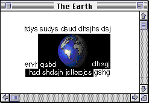
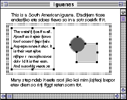
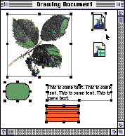
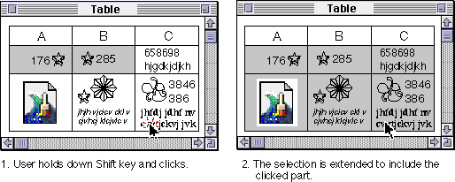
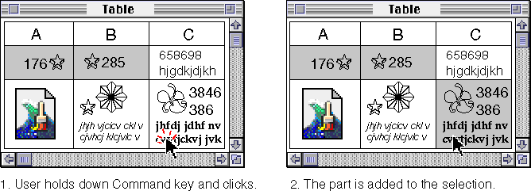
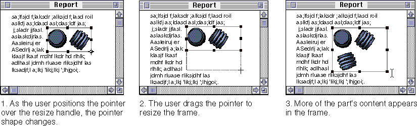
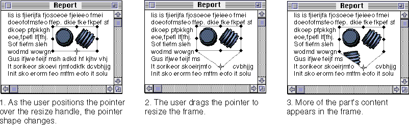
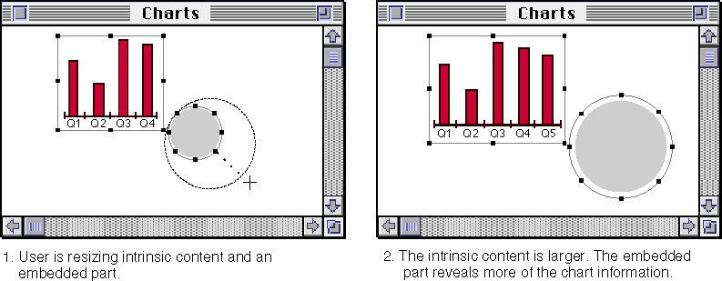

Selection
This section discusses the selection behavior to be implemented by active parts. It covers making multiple selections, extending selections, resizing selections, and selecting hot parts. The basic appearance of selected icons and frames is discussed earlier in this chapter, in the sections "Selected Icon Appearance". See also the chapter "Behaviors" in Macintosh Human Interface Guidelines for techniques and behaviors for selecting your part's intrinsic content.In OpenDoc, a part is responsible for displaying and manipulating selections in accordance with its own content model. Intrinsic content and embedded parts are treated identically, in terms of selection appearance and behavior. The containing part is responsible for drawing the selected appearance of all its content. If the selection includes an embedded part, the containing part notifies the embedded part of the expected selection appearance.
A selection can include any number of parts directly embedded in the active part. (All parts embedded in a selected part are themselves selected.) However, a selection cannot be extended to include isolated, more deeply embedded parts, and it cannot be extended to include parts or other content outside of the active part. In other words, the border of a selection must lie completely within a single part.
Because OpenDoc follows an inside-out activation model, users do not have to activate a part before selecting its content (unless the window is inactive). Regardless of which part is currently active or what the current selection is, a single mouse click in an inactive part can--if the part's content model dictates it--result in that part becoming active, generating a selection or insertion point at the location of the mouse click. The part that receives the mouse click interprets it according to its internal rules for selecting content; the selected item within the newly active part could be intrinsic content, or it could be the frame of an embedded part.
The user manipulates a selected part as a frame. While the part is selected, the user can change its settings, move it, adjust its size, cut it, or copy it, just like any other content element of the containing part. The user can select a part in a number of ways. Your part should conform to the following selection behavior when interpreting mouse clicks:
The procedures for selecting content are in many cases closely related to the gestures for initiating a drag. See "Starting a Drag Operation"
- If the user clicks the mouse button while the pointer is over the active frame border of a part embedded within your part, activate your part (if it is not already active) and select the embedded part.
- If the user holds down the Shift key and clicks anywhere within an unselected frame that is directly embedded in your (active) part, select the embedded part. (This action should have the effect of a toggle; you should allow the user to deselect an already selected frame by this method.)
- If the user employs the Shift-click combination, you can contiguously extend an existing selection in your (active) part, if that action is consistent with your selection model. See "Extending a Selection".
- If the user employs the Command-click combination, you can discontiguously
extend an existing selection in your (active) part, if that action is consistent with your selection model. See "Making a Discontiguous Selection".- If the user drags in your active part while the pointer is not over the current selection, remove any existing selection feedback and create a new range selection (if your part supports range selection). See "Making a Range Selection" (next).
- If the user clicks in an existing selection in your part and doesn't move the mouse, display the insertion location or select the item and deselect the current selection.
- If the user clicks in your part but outside of a selection, remove any existing selection feedback and display the insertion location at the pointer location.
Making a Range Selection
When the user creates a range selection that includes the intrinsic content of an active part plus an embedded part, the active part uses its own selection mechanism for both the intrinsic content and the embedded part. That is, it highlights intrinsic content and, if appropriate, draws the selected appearance of the embedded frame. It also tells the embedded part what type of high-
lighting to use for its own content, so that the overall appearance of the selection will be correct. If the range selection consists of intrinsic text plus an embedded graphics part, for example, the selection appearance of the embedded
graphic should match the selection appearance of the text, as shown in Figure 13-4. There should be no frame border around the graphics part, and the graphics part should draw its content in inverse video or with a background highlight color.Figure 13-4 Range selection of intrinsic text plus an embedded graphics part

Conversely, if the range selection consists of intrinsic object-based drawing elements plus an embedded text part, as shown in Figure 13-5, the selection appearance of the text part should match that of the drawing part. It should include resize handles and a selected frame border, but it should have no background highlighting.Figure 13-5 Range selection of intrinsic graphics plus an embedded text part

Making Multiple Selections
Icons and frames can be freely mixed within a containing part, since they are alternate view types of the same entity. Therefore a multiple selection may include a mixture of icons, embedded content displayed in frames, and intrinsic content, and the containing part must provide the appropriate selection feedback for all of them. Figure 13-6 shows an example of a multiple selection that includes intrinsic content as well as icons and frames of embedded parts.Figure 13-6 Multiple selection of different types of parts and intrinsic content
- Sequenced frames
- The selection behavior for multiple or extended selections in sequenced frames is different. See "Selections in Sequenced Frames" for more information.


Extending a Selection
To allow users to extend a selection of intrinsic content or embedded parts contiguously, implement the Shift-click combination. Each item the user clicks while holding down the Shift key becomes a part of the selection.Figure 13-7 shows an example of this behavior in a table. Shift-clicking extends an existing selection to include the cell that is clicked.
Figure 13-7 Extending a selection by Shift-clicking

Shift-clicking a selected item removes it, leaving the rest of the items in the selection. All selections of multiple parts are equivalent to selections of intrinsic content.Making a Discontiguous Selection
If your part editor supports making a discontiguous selection, including parts that are embedded at the same level in a containing part, implement the Command-click sequence. Command-clicking is a shortcut for selecting whole parts.Figure 13-8 shows an example of this behavior in a table. Command-clicking causes the cell that is clicked to be added to an existing selection. Intervening cells do not become part of the selection.
Figure 13-8 Discontiguous selection of embedded parts

The user can clear a selection by clicking anywhere in a part's content without pressing any modifier keys. This action may result in an empty selection, one that has no items.Conventional applications sometimes support the use of Shift-click to make a discontiguous selection when contiguous selection is not supported. Your part editor may continue to support this convention, but you should also support Command-clicking to enhance the predictability of your parts' behavior.
Resizing Selected Frames
Besides displaying the selected frame border around its embedded parts and telling them how to highlight themselves, the active part is responsible for providing the resizing behavior for frames of its embedded parts. It controls how much of its area an embedded part may occupy, and it also must adjust the layout of the surrounding content when an embedded frame is resized.When a user increases or decreases the size of a frame, more or less of its content should become visible; neither the containing part nor the embedded part should normally scale the visible content to fit the new frame size. The embedded part should anchor the visible content to the upper-left corner of the frame, regardless of the direction in which the user is resizing. Following this guideline provides some perceived stability for users, because they don't see the content moving in perhaps unpredictable ways.
In most cases, the containing part should provide eight selection handles for rectangular frames in order to provide maximum flexibility in resizing. The number of selection handles you provide depends on how many degrees of freedom your containing part can provide for resizing embedded frames. For example, object-based drawing parts historically have provided four handles around a selection, allowing the user to resize the content in four directions. You may choose to continue this pattern if it meets your users' expectations. In some cases, you may provide only one selection handle in the lower-right corner of the selection. This case applies when the user can make the frame larger or smaller in only one orientation. Because the containing part determines the number of resize handles, the number of handles on a frame may change when it is displayed in different containing parts. Selection handles should be 5-by-5 pixels.
As the user positions the pointer over a resize handle, change the pointer shape to the crosshair pointer as explained in the section "Pointers"
Figure 13-9 Resizing an embedded part's frame

If you support resizing of embedded frames at all, you must at least support the resizing of frames as rectangles. You can also support the resizing of irregularly shaped frames. In this case, each selection handle would resize in the direction the user dragged it, as shown in Figure 13-10.Figure 13-10 Independent resize handles

The user can resize intrinsic content and embedded parts, as a multiple selection, using any visible selection handle. In this case, scale all the selected intrinsic content and resize the frames of any selected embedded parts in parallel. Content within embedded parts is not scaled. Figure 13-11 shows an example of this behavior in a drawing part.Figure 13-11 Resizing intrinsic content plus an embedded part

This type of behavior may not always be most appropriate. When its frame is resized, an embedded part can decide whether revealing more of its content or scaling itself is the proper response.Selecting Hot Parts
Hot parts are parts that perform their intended activity immediately in response to a mouse click; examples are buttons or other controls that execute scripts or sound parts that play when clicked. Hot parts in general neither activate themselves nor become selected when they receive a mouse event, because this response might confuse users. Users generally expect a button to perform its task when clicked, rather than activate itself for editing.For hot parts you must therefore implement a selection technique other than clicking. For instance, you can implement a rubber-band dragging technique that allows the user to select the hot part by dragging across it. You should support the Shift-click key sequence to allow the user to select a hot part. If your part editor supports extending a selection using Command-click, then you can also support that key combination to select a hot part.
The containing part may support a layout mode that allows all parts to be selected rather than activated. If your part editor has a layout or arrange mode, you can allow users to select and edit hot parts when this mode is in effect.
Bundling Frames
A bundled frame is a single part that the user can manipulate as a whole. A single click inside the part's content selects the entire part, rather than activating it or any of its embedded parts. To create a bundled frame, the user selects a part, opens the Part Info dialog box (Figure 6-3Bundled checkbox. This action creates a part that acts as one logical unit, so that gestural events, such as clicking or dragging, don't pass through the frame. User property changes don't occur in bundled frames.A bundled part can be viewed in either icon or frame view type, and it can be opened into a part window. The user can't modify the content of a bundled frame, although its content can be modified by the part editor, for example, through a script. A bundled frame still runs in the OpenDoc environment. For example, a QuickTime movie embedded in a bundled frame could still play
its movie.Bundling of frames exists as a selection convenience. Because a click anywhere within a bundled frame selects it rather than activating it, a bundled frame is easier for the user to select, drag, resize, copy, and so on.
For the user, there is no directly visible indicator of the bundled state; the user must open the part's Part Info dialog box to confirm that it is bundled.